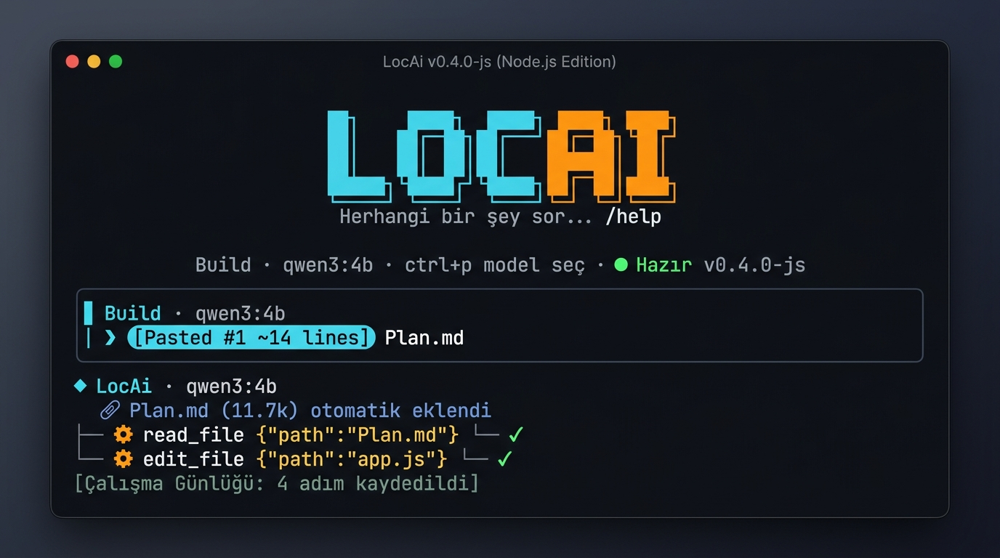
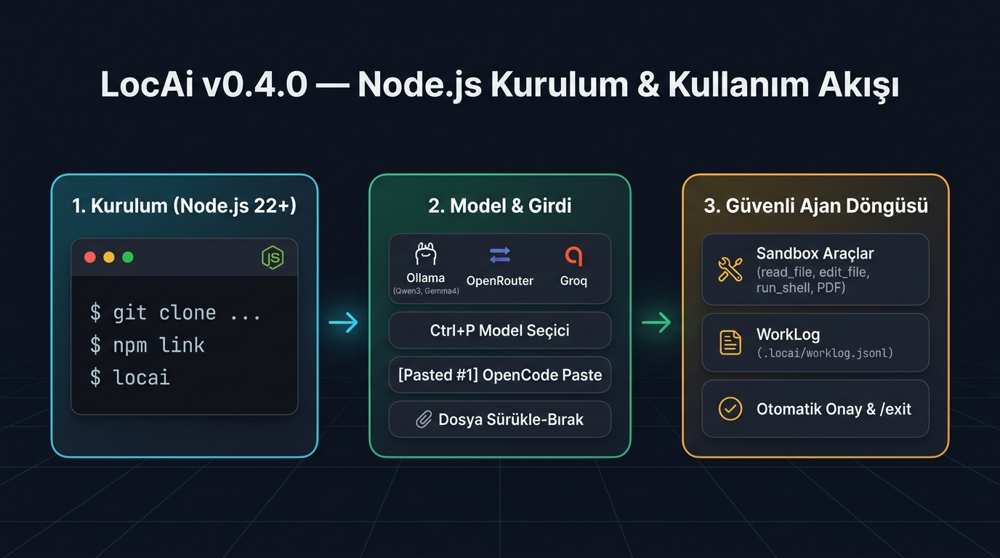

Küçük Yerel Modeller.
Gerçek Kodlama Ajanları.
LocAi v0.4.0-js; Ollama, OpenRouter, Groq ve NVIDIA NIM modelleriyle çalışan, OpenCode tarzı yapıştırma, otomatik dosya ekleme, PDF okuma ve WorkLog hafızasına sahip hafif yerel AI terminal ajanıdır.

Öne Çıkan Özellikler
Küçük modellerin (0.6B–4B) gerçek projelerde hata yapmadan çalışması için tasarlandı.
📋 OpenCode Tarzı Yapıştırma
Çok satırlı metinleri terminale yapıştırdığınızda erken gönderim yapmaz; [Pasted #1 ~N lines] pill'i olarak gösterir ve Enter'da tam metne açar.
🧠 Kalıcı Çalışma Günlüğü (WorkLog)
Her görev ve araç adımını proje klasöründeki .locai/worklog.jsonl dosyasına kaydeder; bağlam kırpıldığında otomatik hatırlatır.
📎 Sürükle-Bırak & PDF Desteği
Terminale bıraktığınız dosya yollarını otomatik okuyup bağlama ekler. .pdf dosyaları pdftotext ile doğrudan metne çevrilir.
🛠️ Araç Onarımı & Güvenlik
Bozuk XML/JSON araç çağrılarını onarır (repair.js), çalışma dizini sandbox'ı uygular, edit_file hatalarında en yakın satırları gösterir.
⚡ Otomatik Onay & Akıcı REPL
Varsayılan otomatik onay ile kesintisiz çalışır, işlem bitince yeni komut bekler ve /exit komutuyla temiz şekilde kapanır.
🔀 Ctrl+P Model Seçici
Ollama yerel modelleri ile OpenRouter, Groq, NVIDIA NIM ve NineRouter bulut modelleri arasında ok tuşlarıyla anında geçiş yapın.
Nasıl Kurulur?
Önce sisteminizde Node.js 22+ kurulu olmalıdır (node -v). Yoksa aşağıdaki adımla kurup devam edebilirsiniz.
# 0. Sisteminizde Node.js 22+ yoksa önce kurun: # Linux: curl -o- https://raw.githubusercontent.com/nvm-sh/nvm/v0.40.1/install.sh | bash && nvm install 22 # macOS: brew install node@22 # Windows: winget install OpenJS.NodeJS.LTS (veya nodejs.org) # 1. Repoyu klonla ve global CLI olarak bağla git clone https://github.com/ilhanakd-max/Local_Ajan.git cd Local_Ajan npm link # 2. Sürümü doğrula ve yerel model indir locai --version ollama pull qwen3:1.7b # 3. Herhangi bir proje klasöründe başlat cd /proje/klasorun locai

Kullanım ve REPL Komutları
Etkileşimli oturum içinde kullanabileceğiniz başlıca komutlar:
| Komut / Kısayol | Açıklama |
|---|---|
Ctrl+P | İnteraktif ok tuşlu model seçiciyi açar |
/model [ad] | Aktif modeli değiştirir veya kullanılabilir modelleri listeler |
/log / /log clear | Proje içi çalışma günlüğünü (.locai/worklog.jsonl) gösterir veya temizler |
/ponytail | Minimalist kodlama modunu (sıfır aşırı mühendislik) açar/kapatır |
/save <ad> / /load <ad> | Oturumu kaydeder veya geri yükler |
/exit | Uygulamadan temiz şekilde çıkış yapar |